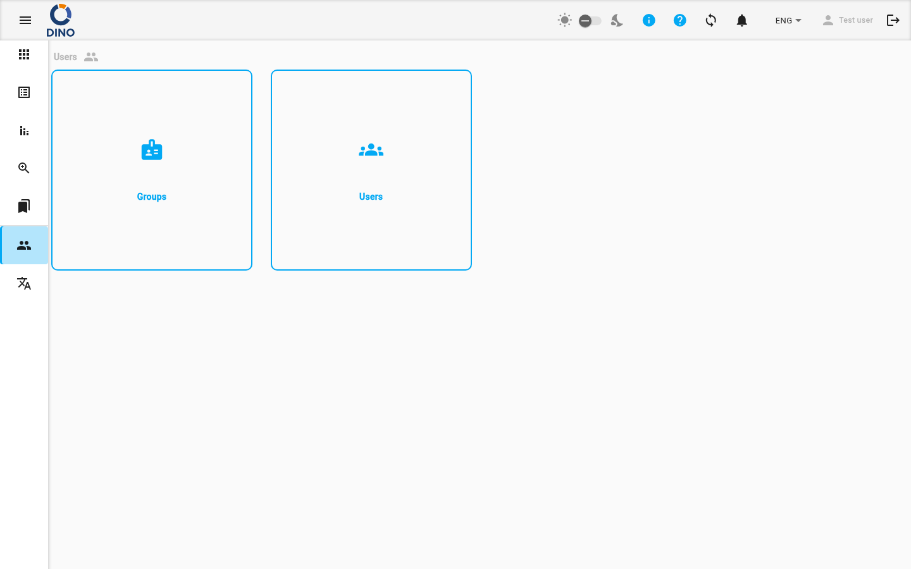
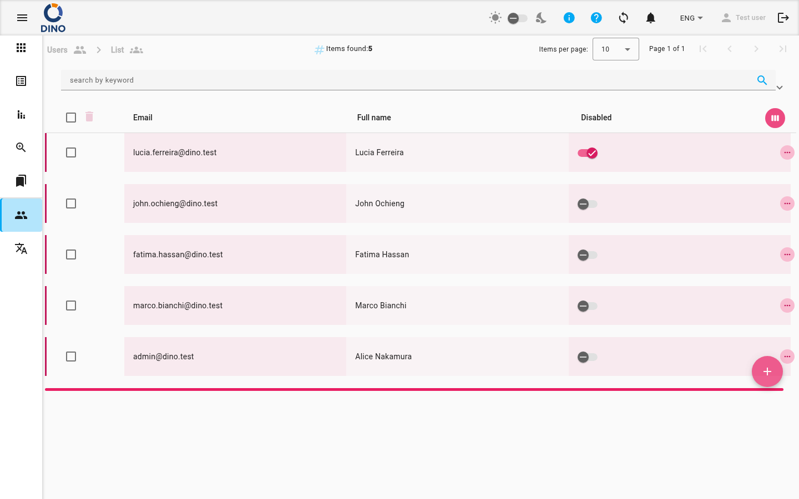

Usuários
A área Usuários é o centro para gerenciar quem pode acessar o Dino e o que podem fazer. A partir daqui, você pode navegar para duas seções principais de administração: Usuários (para contas individuais) e Grupos (para conjuntos de permissões).

Ao abrir a página de Usuários, você verá um menu com as seguintes opções:
-
Usuários: Abre a página Gerenciar Usuários para criar, editar e gerenciar contas de usuários individuais.
Clicar nesta opção leva você à lista de usuários, onde pode visualizar todas as contas, adicionar novos usuários, editar detalhes e desativar contas.

-
Grupos: Abre a página Grupos para criar e gerenciar grupos de permissões que controlam o acesso a formulários, relatórios e dados.
Basta clicar em qualquer item do menu para navegar até a seção correspondente.
Acesso de Administrador Necessário
A área Usuários é visível apenas para usuários com o papel de Administrador. Se você não conseguir ver esta página, entre em contato com o administrador do sistema.
Páginas Relacionadas
- Gerenciar Usuários: Guia detalhado sobre criação, edição e gerenciamento de contas de usuários.
- Grupos: Guia detalhado sobre criação e gerenciamento de grupos de permissões.